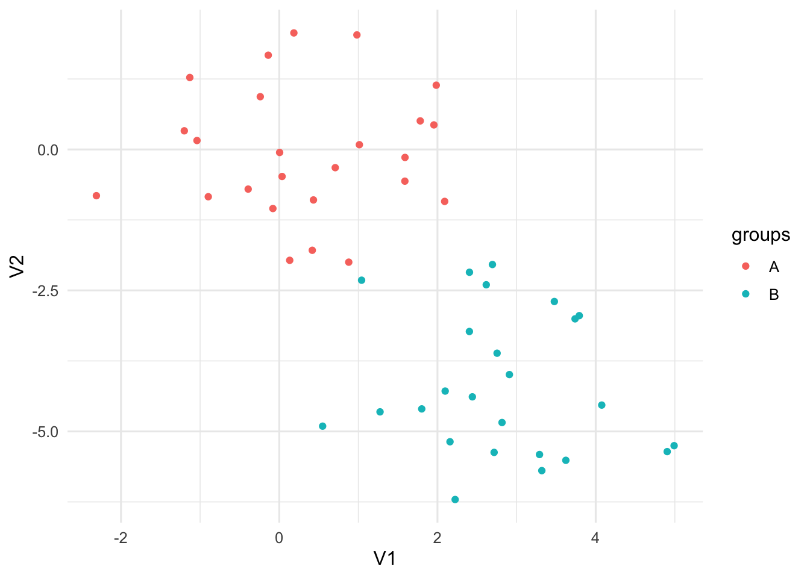
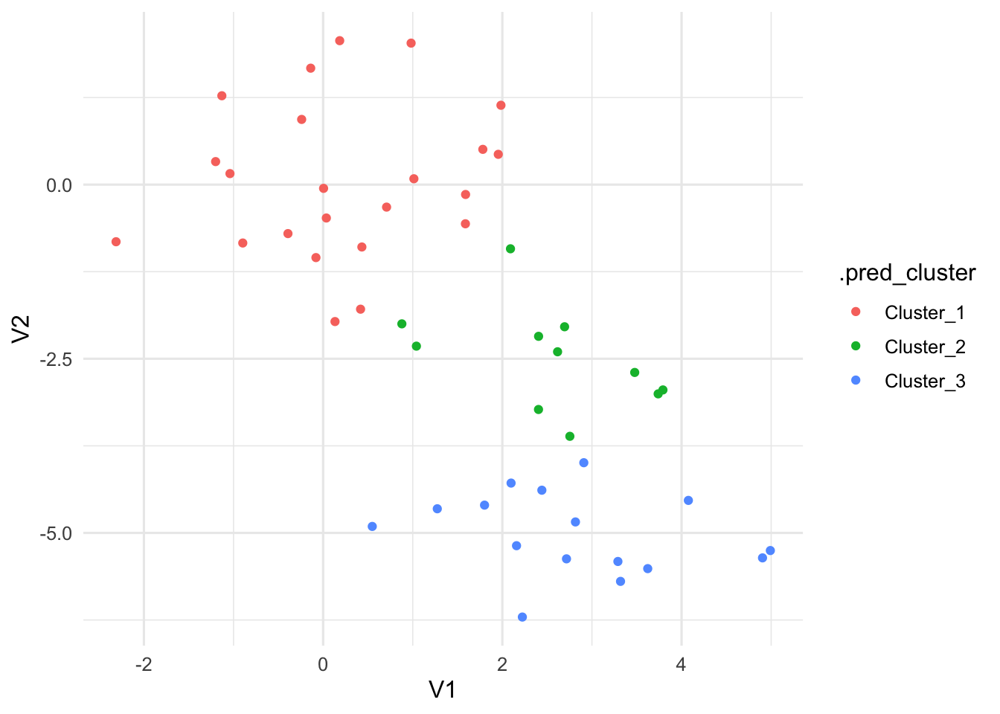
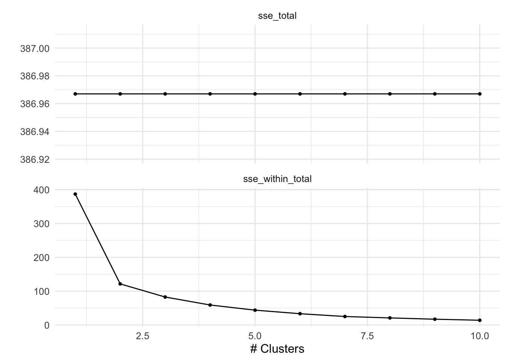
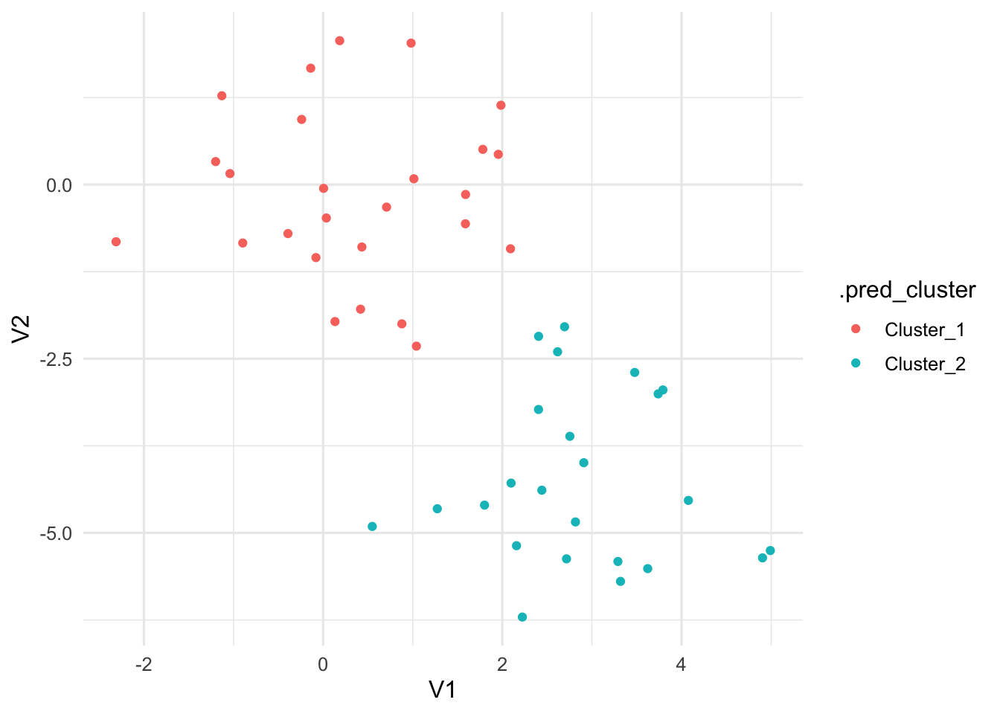

This is Homework Assignment 8 for DS 362. You can view the source code for this assignment on GitHub: view the source code.
For your amusement: What is a bee that can’t make up their mind? A maybe.
Instructions
This homework corresponds to a lab assignment on unsupervised leanring methods with an emphasis on PCA and clustering. Please go through the lab, answering the questions or responding to the prompts as appropriate.
Download the Quarto notebook for this assignment from the course learning management system
In the header, add your name as the author.
Please complete and turn in this assignment as a Quarto notebook.
Lab
Principal Components Analysis
Here we will apply PCA to the USArrests data set. We begin by turning USArrests into a tibble and move the rownames into a column.
Notice how the mean of each of the variables is quite different. If we were to apply PCA directly to the data set then Murder would have a very small influence.
We will show how to perform PCA in two different ways in this section. First, by using prcomp() directly, using broom::tidy() to extract the information we need, and secondly by using recipes. prcomp() takes 1 required argument x which much be a fully numeric data.frame or matrix. Then we pass that to prcomp(). We also set scale = TRUE in prcomp() which will perform the scaling we need.
Exercise 1: Create a new code chunk and perform PCA on the USArrests data set using prcomp() like we did with the penguins data set in lecture. Note that you will have to remove the state column before passing the data to prcomp(). Assign your results to a variable called USArrests_pca.
Exercise 2: Create a new code chunk and use the tidy function from the broom package to extract the information we need from the USArrests_pca object. Assign your results to a variable called USArrests_pca_tidy. Explain what each of the columns in USArrests_pca_tidy represent.
Exercise 3: In order to get the loadings from our PCA, we need to modify an optional argument in the tidy function. Specifically, to get the loadings, use tidy(USArrests_pca, matrix = "loadings") create a new code chunk and assign the results to a variable called USArrests_loadings. Explain what each of the columns in USArrests_loadings represent.
We can use the output from the tidy function to plot the results of a PCA. From example,
Exercise 4: Run the previous code in an R code chunk. Explain what the plot is showing.
Exercise 5: We are interested in the proportion of variance explained by each principal component. We can also obtain this information from the tidy function by modifying the optional argument again to matrix = "eigenvalues" and then use the result to create a plot using code such as
Run the previous code in an R code chunk. Explain what the plot is showing.
Exercise 6: Create a plot of the first two principal components using for the USArrests data set. Explain what the plot is showing.
PCA with Recipes
We can also perform PCA using recipes. This is useful to know about because PCA is often applied as a preprocessing step for other models. Let’s apply this approach to the USArrests data set again.
Here is how we build our recipe: First, use step_normalize() to make sure all the variables are on the same scale. By using all_numeric() we are able to apply PCA on the variables we want without having to remove state. We are also setting an id for step_pca() to make it easier to tidy() later.
pca_rec <-recipe(~., data = USArrests) %>%step_normalize(all_numeric()) %>%step_pca(all_numeric(), id ="pca") %>%prep()
Exercise 7: Call bake(pca_rec, new_data = NULL). What does this produce?
Exercise 8: Call tidy(pca_rec,id="pca"). What does this produce?
Exercise 9: Call tidy(pca_rec,id="pca",type = "variance"). What does this produce?
Further Dimensionality Reduction
Clustering
Kmeans Clustering
We will be using the tidyclust package to perform these clustering tasks. It has a similar interface to parsnip, and works well with the rest of tidymodels. First, you will go through some code to learn how to use tidyclust and then you will use what you learn and modify the provided code to perform clustering on a different data set.
Before we get going let us create a synthetic data set that we know has groups.
set.seed(2)x_df <-tibble(V1 =rnorm(n =50, mean =rep(c(0, 3), each =25)),V2 =rnorm(n =50, mean =rep(c(0, -4), each =25)))
And we can plot it with ggplot2 to see that the groups are really there. Note that we didn’t include this grouping information in x_df as we are trying to emulate a situation where we don’t know of the possible underlying clusters.
x_df %>%ggplot(aes(V1, V2, color =rep(c("A", "B"), each =25))) +geom_point() +labs(color ="groups")

Now that we have the data, let’s create a cluster specification. Since we want to perform k-means clustering, we will use the k_means() function from tidyclust. We use the num_clusters argument to specify how many centroids the K-means algorithm need to use. We also set a mode and engine, which this time are set to the same as the defaults. We also set nstart = 20, this allows the algorithm to have multiple initial starting positions, which we use in the hope of finding global maxima instead of local maxima.
prediction in a clustering model isn’t well defined. But we can think of it as “what cluster would these observations be in if they were part of the data set”. For the k-means case, it looks at which centroid these observations are closest to.
Lastly, we can see what cluster each observation belongs to by using augment(), which does the same thing as predict() but add it to the orginial data set. This makes it handy for EDA and plotting the results.
We can visualize the result of augment() to see how well the clustering performed.
augment(kmeans_fit, new_data = x_df) %>%ggplot(aes(V1, V2, color = .pred_cluster)) +geom_point()

This is all well and good, but it would be nice if we could try out a number of different clusters and then find the best one. For this we will use tune_cluster(). tune_cluster() works pretty much like tune_grid() expect that it works with cluster models.
# A tibble: 20 × 7
num_clusters .metric .estimator mean n std_err .config
<int> <chr> <chr> <dbl> <int> <dbl> <chr>
1 1 sse_total standard 387. 10 8.86 Preprocessor1_M…
2 1 sse_within_total standard 387. 10 8.86 Preprocessor1_M…
3 2 sse_total standard 387. 10 8.86 Preprocessor1_M…
4 2 sse_within_total standard 121. 10 4.00 Preprocessor1_M…
5 3 sse_total standard 387. 10 8.86 Preprocessor1_M…
6 3 sse_within_total standard 82.6 10 2.29 Preprocessor1_M…
7 4 sse_total standard 387. 10 8.86 Preprocessor1_M…
8 4 sse_within_total standard 59.0 10 2.07 Preprocessor1_M…
9 5 sse_total standard 387. 10 8.86 Preprocessor1_M…
10 5 sse_within_total standard 43.8 10 1.99 Preprocessor1_M…
11 6 sse_total standard 387. 10 8.86 Preprocessor1_M…
12 6 sse_within_total standard 33.3 10 1.48 Preprocessor1_M…
13 7 sse_total standard 387. 10 8.86 Preprocessor1_M…
14 7 sse_within_total standard 25.0 10 1.25 Preprocessor1_M…
15 8 sse_total standard 387. 10 8.86 Preprocessor1_M…
16 8 sse_within_total standard 20.8 10 1.10 Preprocessor1_M…
17 9 sse_total standard 387. 10 8.86 Preprocessor1_M…
18 9 sse_within_total standard 17.0 10 1.00 Preprocessor1_M…
19 10 sse_total standard 387. 10 8.86 Preprocessor1_M…
20 10 sse_within_total standard 13.9 10 0.695 Preprocessor1_M…
Now that we have the total within-cluster sum-of-squares we can plot them against k so we can use the elbow method to find the optimal number of clusters. This actually pops right out if we use autoplot() on the results.
tune_res %>%autoplot()

We see an elbow when the number of clusters is equal to 2 which makes us happy since the data set is specifically created to have 2 clusters. We can now construct the final kmeans model
And we can finish by visualizing the clusters it found.
augment(final_kmeans, new_data = x_df) %>%ggplot(aes(V1, V2, color = .pred_cluster)) +geom_point()

Exercise 10: Apply what you just learned about k-means clustering to the four numerical variables in the penguins data set. This data set is loaded at the beginning of the notebook for this lab.
We will use the hier_clust() function from tidyclust to perform hierarchical clustering and to compare the different agglomeration methods. The following code shows how to perform hierarchical clustering using the complete linkage method.
Exercise 11: Modify the code above to perform hierarchical clustering using the average linkage method and the single linkage method. Plot the results using fviz_dend and compare and contrast the results you obtain using the three different methods: complete, average, and single.